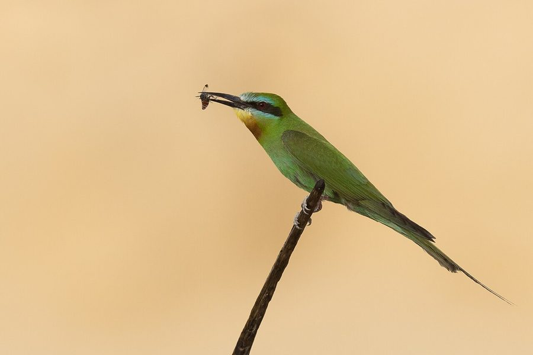

ब्लू-चीक्ड बी-ईटरBlue-cheeked Bee-eater
Merops persicus · Meropidae · BRD-0150

- Scientific nameवैज्ञानिक नाम
- Merops persicus Pallas, 1773
- Familyकुल
- Meropidae
- Hindiहिंदी
- ब्लू-चीक्ड बी-ईटर
- Local namesस्थानीय नाम
- blue cheeked bee eater, blue-cheeked bee-eater, bada patringa, patringa, bee eater
- Status hereयहाँ की स्थिति
- native
- Movementआवागमन
- Summer visitor
- IUCNIUCN
- LC
- Reviewसमीक्षा
- audited and independently read
When to look कब देखें
Summer visitorग्रीष्मकालीन प्रवासी. Expected mainly in April, May, June, July, August, September.मुख्यतः अप्रैल, मई, जून, जुलाई, अगस्त, सितंबर में अपेक्षित।
Arrives in April–May from wintering grounds in Africa and southern Asia; departs by August–September. Ali & Ripley (1968) document spring arrival in northern India; timing varies regionally. All migrants and visitors →
Uses and possibilities उपयोग और संभावनाएँ
Drawn from the documented uses in the profile below, where each is labelled traditional, current or a research lead. All uses →
Tell it apart from इनसे अलग पहचानें
ब्लू-चीक्ड बी-ईटर / Blue-cheeked Bee-eater
Merops persicus Pallas, 1773 — Meropidae
ब्लू-चीक्ड बी-ईटर — यह सुंदर गर्मियों की चिड़िया अप्रैल में पूर्वी उत्तर प्रदेश के खुले खेतों और घास के मैदानों में आती है। इसका नीला रंग, हरी पीठ और नीली गाल की पट्टी इसे अत्यंत सुंदर बनाती है। यह हवा में उड़ते हुए कीड़े, विशेषकर मधुमक्खियाँ, पकड़ती है। इसकी तेजी वाली उड़ान और सामूहिक शिकार इसके आचरण की खासियत है।
Quick Identification त्वरित पहचान
| Feature | Description |
|---|---|
| Size | Medium bee-eater; 25–29 cm long (with tail streamers) |
| Head | Buff with turquoise and blue on cheeks |
| Back | Green; contrasting with head |
| Wings | Green-blue; pointed for rapid flight |
| Throat | Buff or yellow; chin patch often brighter |
| Underparts | Greenish or blue-green tinted |
| Tail | Graduated; two central rectrices elongated (streamers) |
| Behaviour | Gregarious; aerial insect-hunter; perches on wires and branches |
| Call | Soft twittering and rolling calls |
Field tip: In open cultivation and near water bodies in summer, look for a strikingly beautiful green and blue bee-eater perching on wires or trees. In flight, it is extremely agile, sallying repeatedly for insects. The blue cheek patch and elongated tail streamers are distinctive. Often seen in small groups.
हिंदी — कैसे पहचानें:
सुंदर हरी-नीली चिड़िया।
नीली गाल की पट्टी स्पष्ट।
हवा में कीड़े पकड़ती है।
पतली लंबी पूँछ।
Morphology आकारिकी
Biometrics:
| Measurement | Range |
|---|---|
| Total length | 250–290 mm (including tail streamers) |
| Wing (flattened chord) | 120–138 mm |
| Tail | 80–115 mm |
| Bill | 28–36 mm (long, pointed) |
| Tarsus | 12–16 mm |
| Weight | 33–46 g |
Size: 25–29 cm long including tail streamers; wingspan 43–49 cm. Weight 33–46 g. A medium-sized, elegant bee-eater.
Plumage: Head buff to buff-green with turquoise and blue patches on cheeks and around lores. Back green, contrasting with head. Wings green-blue with darker flight feathers. Throat and upper breast buff or pale yellow. Chin patch often brighter yellow or orange. Lower breast and underparts greenish or blue-green tinged. Undertail-coverts greenish-buff. Tail graduated with two central rectrices markedly elongated, forming characteristic tail streamers.
Bill: Long, pointed, slightly decurved, dark. Adapted for catching insects.
Legs and feet: Very short, weak; typical of aerial feeders.
Eyes: Large, dark.
Sexual dimorphism: Minimal; females slightly duller on cheeks.
Juveniles: Duller overall; tail streamers shorter or absent.
Vocalisations. Call repertoire:
- Song: Soft twittering and rolling calls in flight.
- Call: Rippling, liquid calls.
- Contact calls: Soft peeps between flock members.
हिंदी: नर और मादा दोनों ही नरम "चिर-चिर" आवाज़ निकालते हैं। झुंड में आवाज़ों का मिश्रण।
Behaviour & Ecology व्यवहार और पारिस्थितिकी
Aerial insect-hunter: Blue-cheeked Bee-eater hunts exclusively in flight, capturing insects mid-air. It feeds on:
- Bees and wasps (honeybees, wasps, hymenoptera)
- Flying insects (flies, dragonflies, locusts, grasshoppers)
- Small beetles in flight
- Termites in swarms
Hunting technique: Launches from perch, performs rapid sallies, catches insects with precision, often returns to same perch. Extremely agile and fast.
Social behaviour: Highly gregarious. Often seen in small flocks. Flocks hunt together and roost communally.
Habitat preference: Open cultivation, grassland, fields with scattered perches (power lines, trees, shrubs), near water bodies. Prefers areas with abundant flying insects.
Perching behaviour: Uses wires, dead branches, and exposed twigs as launch points for hunting.
Predators: Large raptors , larger birds.
Colony breeding: May breed colonially in sandy banks or holes.
हिंदी: झुंड में रहती है। हवा में कीड़े पकड़ती है। तारों पर बैठकर शिकार की प्रतीक्षा करती है।
Life Cycle / Phenology जीवन चक्र
Summer visitor: Absent during winter months (October–March); returns to eastern UP from April and remains through August–September.
Arrival and departure: First birds arrive in late March–April; peak in May–June; departure begins in August, with most birds gone by September.
Breeding (possibly in region): Breeding behavior in eastern UP poorly documented. Nest is likely a burrow in sandy banks. May breed locally in suitable conditions.
Moult: Complete moult occurs before migration to wintering grounds; partial pre-breeding moult on wintering grounds before arrival.
Roosts: Communal roosting on wires and branches; gregarious.
हिंदी: अप्रैल में आता है, अगस्त तक रहता है। यहाँ घोंसले के बारे में पूरी तरह ज्ञात नहीं है। अफ्रीका में सर्दी बिताता है।
Host Plants or Prey आहार
| Food Type | Examples | Feeding Behaviour |
|---|---|---|
| Bees | Honeybees, various bee species | Aerial capture; return to perch |
| Wasps | Wasps, parasitic wasps | Aerial capture |
| Flies | Various fly species, dragonflies | Aerial capture |
| Grasshoppers | Flying grasshoppers, locusts | Aerial capture |
| Termites | Flying termites in swarms | Aerial capture during termite flights |
हिंदी: मुख्यतः मधुमक्खियाँ खाता है। अन्य उड़ते हुए कीड़े भी। पूरी तरह हवा में शिकार करने वाली।
Predators / Natural Enemies शत्रु
- Avian predators: large falcons, larger birds
- Mammalian predators: Domestic cat (to roosting birds), occasionally mongoose
- Parasites: Blood parasites, internal helminths
हिंदी: बड़ी बाजें शिकार करती हैं। रात में रूस्टिंग साइट पर बिल्ली का खतरा हो सकता है।
Agricultural / Human Relevance कृषि प्रासंगिकता
Protected species: All wild birds in India are protected under the Wildlife (Protection) Act 1972 (Schedule IV, amended 2022). Hunting is prohibited.
Bee predation: Hunts bees and wasps, which may have minor impact on honeybee colonies, but most prey are wild insects.
Pest control benefit: Consumes large numbers of flying insects including crop pests (locusts, grasshoppers, dragonflies), providing significant pest control benefit in agriculture.
Cultural relevance: Known from ornithological records as a striking and conspicuous summer visitor. The long tail streamers and rapid flight make it highly visible and memorable.
Scientific value: Population monitoring important for understanding insectivore-insect dynamics; breeding status in eastern UP needs documentation.
हिंदी: वन्यजीव संरक्षण अधिनियम 1972 के अनुसूची IV के अंतर्गत पूरी तरह संरक्षित है। इसका शिकार निषिद्ध है।
Expected Locally स्थानीय रूप से अपेक्षित
Not a field record. Written from published accounts for eastern Uttar Pradesh. No confirmed local sighting yet — if you have seen it, that is what the atlas needs.
अभी तक स्थानीय पुष्टि नहीं। यह विवरण प्रकाशित स्रोतों से है, किसी अवलोकन से नहीं।
Summer range: Expected in eastern Uttar Pradesh from April to August, particularly in open cultivation and grassland areas of Basti and Ayodhya districts. Published handbooks document this species as a summer visitor to northern India.
Habitat preference: Open cultivation, grassland and fields with scattered perches, near water bodies.
Peak occurrence: May–July when insect prey is most abundant.
Nearest published record: Handbook of the Birds of India documents this species as a summer visitor to northern and central India. Its conspicuous habits make it visible where it occurs.
What a first record would be: A dated photograph or video showing the bird clearly in a specific location (with GPS coordinates and date), such as perched on a wire or hunting, submitted through the About page.
हिंदी: यह पक्षी स्थानीय रूप से अपेक्षित है, न कि देखे गए बतौर प्रेक्षण। अप्रैल से अगस्त तक खेतों और खुली जगहों में देखे जाने चाहिए। पहला रिकॉर्ड के लिए स्पष्ट फोटोग्राफ और तारीख चाहिए।
Distribution वितरण
Global range: Breeding range in western and central Asia, including Iran, Caucasus, central Asia. Winters in Africa and southern Asia (India, Sri Lanka, Myanmar). Migratory throughout most of range.
In India: Summer visitor to northern and central India; primarily a passage and breeding visitor in northern regions.
In Uttar Pradesh: Summer visitor to cultivated areas and grassland of the plains, particularly in eastern districts.
In Basti district / eastern UP: Expected summer visitor in open cultivation areas; breeding status and wintering grounds of eastern UP populations not well documented.
Research Questions शोध प्रश्न
- Are Blue-cheeked Bee-eaters breeding in eastern UP, and if so, where are the nest sites located?
- What is the relationship between insect prey availability (particularly flying insects) and Bee-eater distribution and abundance?
- How much impact do Blue-cheeked Bee-eaters have on honeybee colonies compared to wild insect consumption?
- क्या इस चिड़िया की संख्या और आने-जाने के समय में बदलाव हुआ है?
- How do flocks coordinate hunting, and what role does information transfer play in flock movements? (A child can observe a flock and track their movement patterns over days.)
- क्या कीटनाशकों के उपयोग से इस चिड़िया के शिकार में बदलाव हुआ है?
Similar Species मिलती-जुलती प्रजातियाँ
| Species | Key Difference | Hindi | Field Rule |
|---|---|---|---|
| Green Bee-eater (Merops orientalis) | Smaller; no tail streamers; golden-yellow on throat; different head pattern | हरी मधु-चिड़िया | Green Bee-eater is smaller, lacks tail streamers, and has golden throat; Blue-cheeked has blue cheeks and longer tail streamers. |
| Chestnut-headed Bee-eater (Merops leschenaulti) | Chestnut head; different coloration; no turquoise cheeks | शाहबलूत सिर मधु-चिड़िया | Chestnut-headed shows chestnut crown and lacks blue cheeks. |
| Carmine Bee-eater (Merops nubicus) | Carmine-red plumage; very different coloration | सिंदूरी मधु-चिड़िया | Carmine Bee-eater is red overall; Blue-cheeked is green and blue. |
Field rule: Blue-cheeked Bee-eater shows turquoise-blue cheeks, green back, and elongated tail streamers. If the bird is smaller without tail streamers and has a golden-yellow throat, it is a Green Bee-eater. If the crown is chestnut or the bird is red overall, it is a different species.
Taxonomy & Classification वर्गीकरण
Original description. The species was described by Peter Simon Pallas in 1773 based on specimens from the Caspian region.
Subspecies. Multiple subspecies recognized; the form in India is likely M. p. chrysocercus or M. p. persicus.
Family and order placement. Order Coraciiformes; family Meropidae (bee-eaters). The genus Merops contains bee-eaters, primarily Old World.
Phylogenetic notes. Molecular work has placed bee-eaters within Coraciiformes, related to rollers and kingfishers.
IUCN status rationale. Assessed as Least Concern (LC) globally. Populations are stable across a large range. The species is adaptable to various open habitats. In India, it is protected under the Wildlife (Protection) Act 1972 (Schedule IV).
हिंदी: यह मध्य एशिया और अफ्रीका में पाया जाता है। भारत में गर्मियों में आता है। पूरी तरह सुरक्षित है।
Photo Gallery फोटो गैलरी
No photos yet — add field photos to media/species/blue_cheeked_bee_eater/ and run node scripts/sync_photos.js.
Wanted photos:
- Bird perched on wire or branch
- Close-up of head showing turquoise cheeks
- In flight showing elongated tail streamers
- Hunting or with prey in bill
- Flock on power lines
- Tail streamers clearly visible
References संदर्भ
- Pallas, P. S. (1773). Spicilegia Zoologica. Fase. 5, p. 5.
- Ali, S. & Ripley, S. D. (1970). Handbook of the Birds of India and Pakistan. Vol. 6 (Waxwings to Whydahs). Oxford University Press, Delhi. Pp. 140–143.
- Cramp, S. & Perrins, C. M. (1993). Handbook of the Birds of Europe, the Middle East and North Africa: The Birds of the Western Palearctic. Vol. 8 (Crows to Finches). Oxford University Press. Pp. 192–198.
- Grimmett, R., Inskipp, C. & Inskipp, T. (2011). Birds of the Indian Subcontinent (2nd edn). Oxford University Press, Delhi. P. 304.
- GBIF Occurrence Data — Merops persicus, India.
- IUCN Red List (2023). Merops persicus — BirdLife International assessment. IUCN, Cambridge. Status: Least Concern.
Source file: species/fauna/birds/blue_cheeked_bee_eater.md